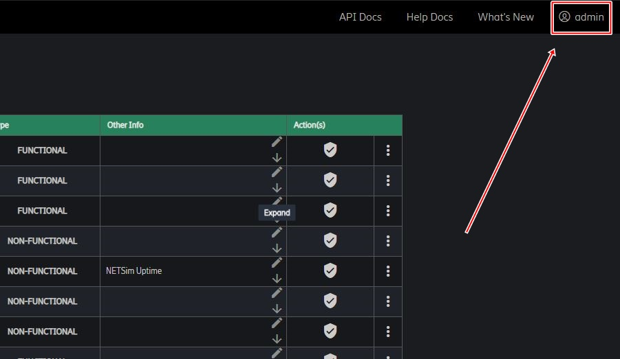

Environments
- Overview
- Purpose
- Environment Table
- Change State
- Environment Logs
- Selecting Environments to Display
- Environment Information
Overview
This page describes the Environments section in the Environment Management Tool.
It describes what the purpose of this feature is and how it works.
Purpose
The purpose of having an environments section in EMT is so that there can be a clear view of all environments and their state.
It provides the user of EMT a UI which clearly displays information about each environment.
Environments in EMT consist of:
- vENM Environments
- Physical Environments
- SIENM Environments
- cENM Environments
Environment Table
The environment tables are where the environments and the information related to each environment is displayed.
There are three tables, one for each state an environment can be in.
The tables are updated with their live status from Jenkins jobs.
- IDLE - the environment is free and ready to use.
- BUSY - the environment is currently being used, typically its running through a pipeline.
- QUARANTINE - the environment is in a quarantine state. For an environment to be in QUARANTINE state means something is wrong with the environment or something is failing e.g. Test Cases. Typically, an environment will be placed in a QUARANTINE state as a result of a failed pipeline.
| Heading | Description |
|---|---|
| Name | The name of an environment. This is a link that can display more information. (Environment Information) |
| State | The state an environment is in. For quarantined environments, there is a button for creating/managing a session. (More Info) |
| Test Phase | The test phase associated to an environment. The test phase is set when adding an environment to EMT. |
| Product Set | The product set installed on an environment. This is a hyperlink which will bring you to the relevant product set page on the CI Portal. A blank cell means no product set is currently installed. |
| Job | If an environment is running through a pipeline, the current job the environment is on is displayed here. This is a hyperlink which will bring you to the Jenkins job. For BUSY the associated job, is the job the environment is currently running on. For QUARANTINE the associated job, is the job in the pipeline it failed on. |
| Type | The type of environment. The supported environment types are: 1. Functional 2. Non-Functional |
| Other Info | This column will have a textarea which will allow a user to input other information they may want to store about an environment. |
| NRM Version | The NRM version presented on the Netsims which are associated to the environment. |
| NRM Size | The NRM Size of the Netsims which are associated to the environment. |
| NSS Product Set Version | The Product Set Version installed on the Netsims which are associated to the environment. |
Change State
When an environment is in QUARANTINE state, to start a new pipeline you may want to move it into IDLE state.
When an environment is in IDLE state, you may realize there is a problem and you want to manually set it into QUARANTINE.
To change state:
- Click the three buttons under Actions in the environment table
- Hover over environment actions
- Click "Change State" button
Available UI State changes:
- IDLE -> QUARANTINE
- QUARANTINE -> IDLE
Environment Logs
Every update on an Environment will be logged in Kibana Dashboard
To view Environment Logs:
- Click the three buttons under Actions in the Environment table
- Click Environment Logs Button
- That will take us to that particular Environments logs in Kibana
Selecting Environments to Display
This will only work in the environment's page.
To access this page, make sure you have the correct permissions
Steps
1 Open System Panel
- Click your signum in the system bar on the top right of the page.
- This will open the system panel.
- 
2 Tick The Checkboxes
- To view other environments, tick the checkboxes of each corresponding area.
- The environments' table will automatically update.

Environment Information
Environment Information is displayed when a user clicks the hyperlinked environments name.
A popup modal will appear with the following information for an environment.
For vENM and SIENM
- DIT Link
- DDP Link
- ENM GUI Link
- Workflows Link
- Horizon GUI Link
For cENM
- DIT Link
- DTT Link
- DDP Link
- ENM GUI Link
Netsim Information
Displays the NRM Version, NRM Size and NSS product set version of the Netsims.
For Physical:
- DMT Link
- ENM GUI Link
The above links have a button which allows a quick copy of the link.
There is also a copy all button which allows you to copy all links above in a formatted fashion.
Environment Information
Displays the Environment Description(DD.XML) information of the environment.
Netsim Information
Displays the NRM Version, NRM Size and NSS product set version of the Netsims.
Node Information
For RNL deployments only, displays the Node Type.
Additional Environment Information
Additional Information provides a text box where a user can manually enter information about an environment.
When this is saved it persists in a database where it will be displayed in the popup modal.
To delete this information just remove it from the text box and save it.